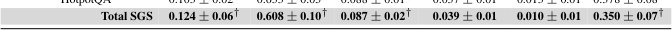

Neyrotarmoqlar aniqligi: barqarorlik illyuziyasi

Tadqiqotchilar SAGO tizimini taqdim etishdi, u til modellarining barqarorligini alohida misollar darajasida baholaydi. Ma'lum bo'lishicha, so'rovning umumiy ma'nosi saqlanib qolsa ham, modellar xatti-harakatida sezilarli tebranishlar kuzatiladi. Standart aniqlik ko'rsatkichlari bu nosozliklarni yashirib, tizimlar ishonchli degan noto'g'ri taassurot qoldiradi.
Asosiysi
- SAGO so'rovlarni qayta ifodalashda model barqarorligini o'lchaydi, o'rtacha aniqlikni emas.
- 11 ta modelni o'rganish ularning alohida misollar darajasida sezilarli beqarorligini ko'rsatdi.
- Umumlashtirilgan ko'rsatkichlar xatolarni yashiradi, chunki ba'zi variatsiyalardagi muvaffaqiyatsizliklar boshqalarida yopiladi.
Batafsil
Mualliflar 11 ta ochiq va yopiq LLM modellarini 6 xil ma'lumotlar to'plamida tahlil qilib, to'rtta o'lchov bo'yicha baholashdi: generatsiya izchilligi, ichki aktivatsiyalar, model ishonchi va javoblarni ko'chirish (mirroring). An'anaviy benchmarklardan farqli o'laroq, SAGO kiritilgan ma'lumotlarning semantik ekvivalent o'zgarishlarida (registr, uzunlik yoki xushmuomalalik o'zgarishi) model xatti-harakatining o'zgarishini o'lchaydi.
Natijalar shuni ko'rsatadiki, hech bir model bir xil darajada umumlashtirish qobiliyatiga ega emas. Xatti-harakat o'qlari mustaqil xato turlarini qayd etadi va ma'lumotlar to'plamining o'zgarishi model reytingini butunlay o'zgartirib yuborishi mumkin. Bu shuni isbotlaydiki, umumlashtirilgan ballarga asoslangan hozirgi baholash usullari algoritmlarning real foydalanish sharoitidagi haqiqiy beqarorligini aniqlay olmaydi.
Cheklovlar
Ish modellarning semantik variatsiyalardagi xatti-harakatiga qaratilgan va uzoq muddatli kontekst ta'sirini hisobga olmaydi.
Maqolaning batafsil tahlili
Annotatsiya
Katta til modellarining (LLM) umumlashtirish qobiliyati deganda, bir xil soʻrov turli shakllarda ifodalanganda semantik jihatdan barqaror va izchil natijalar berish qobiliyati tushuniladi. Mavjud baholash usullari odatda yagona formatdagi maʼlumotlar toʻplami boʻyicha umumiy aniqlikka tayanadi, bu esa modelning umumiy unumdorligi va uning kiritilgan maʼlumotlardagi oʻzgarishlarga chidamliligini ajratib koʻrsatishni qiyinlashtiradi.
Izoh
Umumlashtirish — bu modelning foydalanuvchi savolni qayta shakllantirganda ham javob mazmunini saqlab qolish qobiliyatidir.
Ushbu ishda Stability-Aware Generalization Objective (SAGO) tizimi taqdim etilgan. U model xatti-harakatlarini alohida misollar darajasida baholashga imkon beradi va kiritilgan maʼlumotlarning turli variantlari ostida javoblardagi oʻzgarishlarni tahlil qiladi. SAGO bir nechta parametrlar boʻyicha oʻzgaruvchanlikni oʻlchaydi: generatsiya izchilligi, neyron tarmoqning ichki faollashuvi, modelning ishonch darajasi va javoblarning aks etishi.
Muhim
Tadqiqot shuni koʻrsatdiki, sinovdan oʻtgan modellarning hech biri bir xil umumlashtirish qobiliyatiga ega emas va modellarning samaradorlik reytingi foydalanilgan maʼlumotlar toʻplamiga qarab oʻzgarishi mumkin.
Tahlil shuni koʻrsatdiki, zamonaviy modellar umumlashtirishda statistik jihatdan sezilarli beqarorlikni namoyon etadi. Model xatti-harakatlarining turli oʻqlari xatolarning mustaqil turlarini aks ettiradi va maʼlumotlar toʻplamining oʻzgarishi modellarning samaradorlik reytinglarida teskari natijalarga olib kelishi mumkin. Mualliflar mustaqil tekshirish uchun usulning namunaviy realizatsiyasini taqdim etdilar.
Kirish
LLM umumlashtirish konteksti va muammosi
Katta til modellari (LLM) qidiruv tizimlari, dasturlash yordamchilari va agent ish jarayonlarida faol qoʻllanilmoqda. Model ishonchliligining asosiy koʻrsatkichi — bu umumlashtirish qobiliyati, yaʼni soʻrovning shakli oʻzgarganda ham, agar uning maʼnosi va konteksti bir xil boʻlib qolsa, samaradorlikni saqlab qolishdir. Foydalanuvchilar uzunlik, ohang, formatlashni oʻzgartirishi yoki shovqin qoʻshishi mumkin, ammo model ushbu oʻzgarishlardan qatʼi nazar, oʻz koʻrsatmalariga va xavfsizlik siyosatiga amal qilishi kerak. Oldingi tadqiqotlar shuni koʻrsatadiki, maʼno saqlanib qolganda ham LLM xulq-atvori oʻzgaradi, bu esa soʻrovlar ifodasi, soʻzlar tartibi yoki ohangiga nisbatan zaiflikni koʻrsatadi.
Muhim
Modelning semantik jihatdan ekvivalent soʻrovlar uchun barqaror xulq-atvorini saqlab qolish qobiliyati ishonchlilikning muhim koʻrsatkichi boʻlib, u koʻpincha oʻrtacha koʻrsatkichlar foydasiga eʼtibordan chetda qoladi.
Joriy yondashuvlarning cheklovlari va SAGO metodologiyasi
Amaldagi baholash usullari bir qator kamchiliklarga ega: ular koʻpincha bitta mavzu sohasi bilan cheklanadi, soʻrovlar variatsiyalarining tor doirasini koʻrib chiqadi yoki agregatsiyalangan koʻrsatkichlarga tayanadi. Oʻrtacha baholar ayrim soʻrov variantlaridagi xatolar boshqalaridagi muvaffaqiyatlar bilan qoplanishi hisobiga alohida misollar darajasidagi jiddiy nosozliklarni yashirishi mumkin. Ushbu boʻshliqni toʻldirish uchun mualliflar Stability-Aware Generalization Objective (SAGO) tizimini taklif qiladilar. SAGO oʻrtacha sifatni baholash oʻrniga, har bir aniq misol uchun modelning turli semantik ekvivalent variatsiyalarda oʻzini qanday tutishini tekshiradi.
Izoh
SAGO — bu baholash metodologiyasi boʻlib, u bir xil topshiriq qayta ifodalanganda modelning javobi, uning ichki ishonchi va neyron faollashuvlari qanchalik oʻzgarishini tahlil qiladi.
Ehtiyot bo'ling
Tadqiqot 11 ta modelni qamrab oladi, ammo natijalar tanlangan oltita maʼlumotlar toʻplami va kiritilgan maʼlumotlardagi buzilish turlarining xususiyatlariga bogʻliq boʻlishi mumkin.
SAGO doirasida generatsiya izchilligi, ichki faollashuvlar, modelning ishonchi va javoblarning «koʻzgulanishi» (response mirroring)dagi oʻzgarishlar tahlil qilinadi. Mualliflar 11 ta ochiq va yopiq LLMni oltita maʼlumotlar toʻplamida sinovdan oʻtkazdilar. Natijalar shuni koʻrsatadiki, umumlashtirishdagi beqarorlik keng tarqalgan va bir jinsli emas. Ishning asosiy xulosalari xulq-atvor oʻzgarishlarini oʻlchash uchun koʻp oʻqli metrikani yaratish va generatsiya izchilligi eng sezgir parametr ekanligini, shuningdek, kontent barqarorligi va javoblarning koʻzgulanishi model sezgirligining mustaqil oʻlchovlari ekanligini empirik isbotlashni oʻz ichiga oladi.
Bajarilgan ishlar va kontekst
Katta til modellarining (LLM) umumlashtirish barqarorligi bo'yicha tadqiqotlar bir nechta yo'nalishlarga bo'linadi, ularning har biri muammoning alohida jihatini o'rganadi.
Ta'minotdan tashqari barqarorlik (Out-of-distribution). Bu yo'nalish test ma'lumotlari o'quv ma'lumotlaridan farq qilganda modellarning xatti-harakatini o'lchaydi. Adabiyotlarda bu ajratilgan tanlanmadagi unumdorlikning yagona ko'rsatkichi sifatida rasmiylashtiriladi. Katta hajmdagi benchmarklar ushbu farqni ko'plab domenlar bo'yicha jamlaydi. Ushbu tadqiqotlar taqsimotdagi siljishlar unumdorlikni pasaytirishi va bu pasayish dataset darajasida sezilarli ekanligini tasdiqlaydi. Biroq, ular model bir xil ma'noli, lekin turli shakldagi kiritmalarga izchil javob berishini tekshirmaydi va ma'lumotlarni jamlagani uchun alohida misollar darajasidagi beqarorlikni aniqlash imkonsiz bo'ladi.
Muhim
Mavjud barqarorlikni baholash usullari ko'rsatkichlarni jamlaydi, bu esa modelning aniq so'rovlar darajasidagi beqarorligini yashiradi.
Prompt darajasidagi o'zgarishlarga nisbatan izchillik va sezgirlik. Ikkinchi yo'nalish ma'noni o'zgartirmasdan qayta ifodalangan kiritmalarda bashoratlarning barqarorligini tekshiradi. Bunga faktik so'rovlarning qayta ifodalanishidagi nomuvofiqliklar va yo'riqnomalarga moslashtirilgan modellardagi tizimli kelishmovchiliklar kiradi. Tadqiqotlarning katta qismi tor semantik sohalarga qaratilgan: tillararo variantlar, ijtimoiy ohangdagi siljishlar va xavfli so'rovlarni qayta ishlashdagi izchillik. Uchinchi yo'nalish esa ma'noga ta'sir qilmaydigan sirtqi o'zgarishlarga (formatlash, shablon tanlash, kontekstdagi misollar tartibi, tinish belgilari va bo'shliqlar) sezgirlikni o'rganadi. Garchi bu ishlar LLM xatti-harakati semantik jihatdan ekvivalent kiritmalarda kamdan-kam hollarda invariant qolishini ko'rsatsa-da, ular modelning umumiy umumlashtirish qobiliyatini to'liq baholamaydi.
Aniqlikdan tashqari xulq-atvor signallari. Biz foydalanadigan tahlil o'qlari turli sohalarda rivojlangan. Yashirin holatlar geometriyasi kiritma o'zgarganda ichki tasvirlar qanday o'zgarishini kuzatadi. Semantik o'xshashlik choralari (masalan, BERTScore) leksik qoplanishni (BLEU) to'ldiradi. Token darajasidagi log-ehtimolliklar va bashoratli entropiya ishonchlilikni o'lchash uchun standart vositalardir. Stilistik akkomodatsiya — modelning kiritma registrini aks ettirish darajasi — mustaqil hodisa sifatida o'rganiladi. Garchi ko'zgu effekti ko'pincha yo'riqnomalarga moslashtirishning ijobiy xususiyati bo'lsa-da, agar model semantik bo'lmagan shovqinlarni nusxalasa, bu kutilmagan beqarorlik sifatida namoyon bo'lishi mumkin. Ushbu signallarni alohida misollar darajasida birlashtirilgan tahlil qilish ilgari amalga oshirilmagan.
Izoh
Stilistik akkomodatsiya — bu modelning o'z javob uslubini olingan so'rov uslubi yoki registriga moslashtirishga moyilligi.
Barqarorlikni hisobga olgan holda umumlashtirish maqsadi (SAGO)
SAGO semantik ekvivalent kiritma o'zgarishlariga nisbatan barqarorlikni baholaydi: model faqat so'rov ma'nosi saqlanib qolganda uning xatti-harakati barqaror bo'lsa, umumlashtiruvchi hisoblanadi. Biz buni o'zgarishlar oilalari, kontent domenlari va alohida promptlar bo'yicha, asl va o'zgartirilgan ma'lumotlardagi xatti-harakatlarni bir nechta o'qlar bo'yicha solishtirish orqali o'lchaymiz. Tizim quyidagilarni o'z ichiga oladi: (1) nazorat qilinadigan semantik o'zgarishlar benchmarki, (2) har bir prompt uchun barqarorlik ko'rsatkichi va (3) turli xil nosozlik turlarini qayd etuvchi xulq-atvor o'qlari.
Belgilashlar va maqsadli funksiya
Shartli ravishda, X — matnli soʻrovlar (promptlar) fazosi, Y — model javoblari fazosi, f_θ: X → Y esa kiritilgan yoʻriqnomalarga moslashtirilgan (instruction-tuned) va \Dj\j=1J maʼlumotlar toʻplamlari boʻyicha baholanadigan til modeli boʻlsin. D_j toʻplamidagi x_i soʻrovi uchun bazaviy javob y_i = f_θ(x_i) ga teng. c: X → C funksiyasi har bir soʻrovni uning semantik mazmuniga akslantiradi. Har bir soʻrov uchun v \in V indeksi boʻyicha semantik ekvivalent boʻlgan oʻzgartirishlar toʻplami shakllantiriladi:
$xi(v) = Tv(xi), \quad c(xi(v)) = c(xi) \quad (1)$
bu yerda T_v: X → X soʻrovning maʼnosini toʻliq saqlaydigan almashtirishdir.
Oʻq (axis) deganda modelning konkret soʻrovdagi xatti-harakatini ifodalovchi skalyar koʻrsatkich X(f_ heta, x) \in \mathbbR tushuniladi. v variatsiyasi keltirib chiqargan ogʻish Δ X(i, v) = X(f_θ, x_i^(v)) - X(f_θ, x_i) koʻrinishida hisoblanadi. Bu farq ishorali boʻlib, masalan, manfiy Δ XAct qiymati reprezentativ siljishni (representational drift) anglatadi. Ogʻishning absolut kattaligini jamlash uchun kvadratik oʻrtacha qiymatdan (RMS) foydalaniladi.
SAGO usulining maqsadi barcha i va v \in V uchun quyidagi qatʼiy shart bajarilishini aniqlashdan iborat:
$Δ X(i, v) = 0 \quad (2)$
Agar ushbu tenglik buzilsa, usul modelning ushbu shartdan qanchalik uzoqlashganini miqdoriy jihatdan baholaydi. Har qanday ogʻish X oʻqi boʻyicha umumiylashtirish qobiliyatining buzilganligini koʻrsatadi. Bir oʻq boʻyicha barqarorlik boshqasida ham barqarorlikni kafolatlamagani uchun, bu shart har bir oʻq uchun alohida hisoblanadi.
Muhim
> SAGO maqsadli funksiyasi model javoblarining mukammal invariantligini tekshiradi: soʻrov maʼnosi saqlangan holda yuzaga kelgan har qanday Δ X(i, v) eq 0 ogʻish umumiylashtirish qobiliyatining buzilishi deb baholanadi.
Benchamrkni shakllantirish
Yaratilgan benchamrk bir nechta maʼlumotlar toʻplamini nazorat qilinadigan kirish oʻzgarishlari bilan birglashtiradi. Har bir variatsiya v = (F, u, s, p) korteji bilan tavsiflanadi, bu yerda F \in \mathcalF — oʻzgartirishlar oilasi, u \in UF — uning kichik turi, s \in SF — taʼsir kuchi, p \in \mathcalP = \ extPREFIX, extSUFFIX, extGLOBAL\ esa joylashuv oʻrnidir.
Variatsiyalarning toʻliq toʻplami quyidagicha tuziladi:
$V = \(F, u, s, p) \mid F \in \mathcalF, u \in UF, s \in SF, p \in \mathcalP\ \quad (3)$
Tadqiqotchilar uchta asosiy oilani ajratib koʻrsatishdi, ularning har biri shunday tanlanganki, birida barqarorlik saqlanishi boshqasida ham barqaror boʻlishini anglatmaydi. Bunda c(x_i^(v)) = c(x_i) maʼno saqlanishi sharti toʻliq bajariladi:
- Ijtimoiy registr (Social register): soʻrovning shaxslararo muloqot uslubini oʻzgartiradi (xushmuomalalik, samimiylik, salomlashish, minnatdorchilik belgilari yoki salbiy kontekst).
- Sirtqi shovqin (Surface noise): belgi va token darajasida oʻzgarishlar kiritadi (tartibsiz boʻshliqlar, tinish belgilari xatolari va katta-kichik harflar siljishi).
- Tarkibiy qayta yozish (Structural rewriting): mazmunni saqlagan holda soʻrov strukturasini oʻzgartiradi (uzunlikni qisqartirish yoki kengaytirish, soʻroq shaklini buyruq shakliga oʻtkazish).
Izoh
> Benchmark real foydalanuvchilar soʻrovlarida koʻp uchraydigan uch xil xalaqit beruvchi omilga nisbatan model barqarorligini sinaydi: muloqot ohangining oʻzgarishi, imlo xatolari va qayta ifodalash.
Barqaror umumiylashtirish koʻrsatkichi (SGS)
Modelning (2)-tenglikdan ogʻish darajasini oʻlchash uchun SGS (Stability Generalization Score) koʻrsatkichi qoʻllaniladi. Turli oʻqlar har xil oʻlchov birliklariga ega boʻlgani uchun, xom delta qiymatlari avval standart shkalaga keltiriladi.
Har bir delta belgilan oʻq miqyosi omiliga R_X boʻlinadi:
ildeΔ X(i, v) = Δ X(i, v) / R_X
Chegaralangan diapazondagi oʻqlar uchun R_X qiymati /Δ X/ ning nazariy maksimal qiymatiga teng; chegaralanmagan ketma-ketlik log-ehtimolligi (log-probability) uchun R_X empirik diapazondan kelib chiqib oʻzgarmas konstanta sifatida olinadi. Natijada ildeΔ X \in [-1, 1] oraligʻi hosil boʻladi, bu yerda 0 nolga teng xatti-harakat oʻzgarishini bildiradi.
Alohida i soʻrovi uchun X oʻqidagi beqarorlik butun V variatsiyalar toʻplami boʻyicha normalizaciya qilingan deltalarning kvadratik oʻrtacha qiymati (RMS) sifatida hisoblanadi:
$sX(i) = ≤ft( \frac1/V/ \sumv \in V ildeΔ X(i, v)2 \right)1/2$
Agar model barcha variatsiyalarda bir xil noldan farqli miqdorga siljisa, RMS ushbu beqarorlikni toʻgʻri qayd etadi.
D_j maʼlumotlar toʻplami uchun SGS koʻrsatkichi soʻrovlar beqarorligining oʻrtacha qiymatiga teng: extSGSX(j) = \frac1/Dj/ \sumi \in Dj sX(i). Umumiy ball esa barcha toʻplamlar boʻyicha har bir soʻrovga teng vazn bergan holda hisoblanadi:
$ extSGSX = \frac1N \sumj=1J /Dj/ · extSGSX(j), \quad extbu yerda N = \sumj=1J /Dj/$
SGS_X qiymatining pastligi yuqori barqarorlikni anglatadi. SGS_X = 0 tengligi faqat va faqat model barcha soʻrovlarda (2)-shartni bajargandagina oʻrinli boʻladi.
Ehtiyot bo'ling
> Metrika javoblar tarqoqligini [-1, 1] intervaliga keltirgani sababli, koʻrsatkichning sezgirligi chegaralanmagan parametrlar uchun R_X kotirovkasining toʻgʻri tanlanganiga bogʻliq.
Statistik ahamiyatlilikni baholash uchun noldan farqli chegaraviy bagʻrikenglik qiymatiga nisbatan bir tomonlama t-test qoʻllaniladi (H0: \mathbbE[sX(i)] ≤ \varepsilon va H1: \mathbbE[sX(i)] > \varepsilon). Tadqiqotda \varepsilon \in \0,01; 0,05; 0,10\ qiymatlari sinab koʻrilgan (mos ravishda 1%, 5% va 10% diapazon). Asosiy natijalar \varepsilon = 0,05 uchun berilgan. Test statistikasi t = (\barsX - \varepsilon) / extSE(sX) formulasi boʻyicha hisoblanadi, bu yerda \barsX — tanlanma oʻrtacha qiymati, SE(s_X) esa N ta soʻrov uchun standart xatolikdir.
Metrikalar
SGSX har bir X oʻqi uchun mustaqil hisoblanadi. Biz modelning ishlashdan toʻxtash usullarini qamrab oluvchi toʻrtta oʻqni ajratib koʻrsatamiz (2-tenglama). Har bir oʻq umumiy aniqlik metrikalari ajrata olmaydigan xulq-atvor sezgirligini qayd etadi.
Faollashuv geometriyasi (XAct). Ichki tasvirlar yakuniy javoblar oʻzgarmasa ham, prompt oʻzgarganda farq qilishi mumkin. Biz ∆XAct ni asl va oʻzgartirilgan promptlar uchun oxirgi qatlam h_\ell yashirin holatlarining kosinus oʻxshashligi oʻrtasidagi oʻrtacha farq sifatida aniqlaymiz. Manfiy qiymatlar tasvirlarning «siljishini» koʻrsatadi. RAct = 2 masshtab koeffitsiyenti -1 dan 1 gacha boʻlgan diapazonni qamrab oladi.
Muhim
XAct metrikasi tashqi javoblar barqaror boʻlsa ham, ichki tasvirlar oʻzgarganda modelning ichki beqarorligini aniqlaydi.
Generatsiya izchilligi (XBLEU, XBERT). Model aniqlikni saqlab qolgan holda javob shakllarini oʻzgartirishi mumkin. Biz bazaviy va oʻzgartirilgan promptlarga javoblar oʻrtasidagi BLEU (leksik oʻxshashlik) va BERTScore (semantik oʻxshashlik) metrikalaridagi farqni oʻlchaymiz. Masshtab koeffitsiyentlari RBLEU = 100 va $R_{BERT} = 1 ni tashkil etadi.
Ishonch va noaniqlik (XProb, XEnt). Model barqaror javoblar berib, shu bilan birga ishonchsizroq boʻlib qolishi mumkin. Biz ketma-ketlikning logarifmik ehtimolligi (XProb) va tokenlar darajasidagi oʻrtacha entropiyadan (XEnt) foydalanamiz. Entropiya javob uzunligiga bogʻliq boʻlmagan ishonch signali sifatida xizmat qiladi (REnt = 10), logarifmik ehtimollik esa uzunlikka sezgir boʻlgani uchun unga RProb = 250 belgilangan.
Izoh
Entropiya bu oʻrinda modelning keyingi tokenni tanlashdagi «ikkilanishi» oʻlchovidir: qiymat qanchalik yuqori boʻlsa, model tanlovi shunchalik oldindan aytib boʻlmaydigan boʻladi.
Javoblarni koʻzgusimon aks ettirish (XMR). Model javob uslubini kiritilayotgan maʼlumotlarning sirtqi xususiyatlariga (masalan, uzunlik yoki shovqin) moslashtirishi mumkin. Biz m(y, v) binar detektoridan foydalanamiz, u y javob v variatsiyasining xususiyatini aks ettirishini aniqlaydi. ∆XMR qiymati bazaviy va oʻzgartirilgan promptlar oʻrtasidagi ushbu aks etish farqini koʻrsatadi (RMR = 1).
Eksperimentlar
Biz SAGO tizimi yordamida instruksiyalarga moslashtirilgan LLM modellarini baholaymiz. Biz SGSX ni variatsiyalar oilasi, turi, kuchi va pozitsiyasining barcha kombinatsiyalari uchun hisoblaymiz. Tadqiqot uchta savolga javob izlaydi: nosozlik turlari oltita ∆-oʻq boʻyicha farqlanadimi; model ichidagi maʼlumotlar toʻplamining oʻzgarishi model reytingini oʻzgartirish uchun yetarlimi; va yopiq hamda ochiq modellar oʻrtasida beqarorlik profillarida sifat jihatidan farqlar bormi.
Ehtiyot bo'ling
Baholash instruksiyalarga moslashtirilgan modellar ustida oʻtkaziladi; natijalar model oilasining oʻziga xos xususiyatlariga bogʻliq boʻlishi mumkin.
Eksperimental sozlamalar
Tadqiqotchilar sakkizta ochiq kodli (Llama-3.2/3.1, Gemma-2/4 va Qwen2.5/3.5 oilalari) hamda uchta yopiq kodli (GPT-5.4, Gemini-2.5-Flash, Claude-Sonnet-4.6) modellarni tahlil qildilar. Barcha modellar uchun deterministik dekodlash (T=0) qo'llanildi. Hisob-kitoblar NVIDIA RTX 2080 Ti va GTX 1080 Ti grafik protsessorlarida bajarildi. Samaradorlik oltita ma'lumotlar to'plami (TruthfulQA, Natural Questions, Alpaca, SimpleQA Verified, TriviaQA, HotpotQA) yordamida baholandi. Har bir to'plam uchun 16 ta prompt tanlab olindi.
Izoh
Deterministik dekodlash (T=0) — bu neyron tarmoqning har doim eng ehtimolli keyingi tokenni tanlaydigan ish rejimi bo'lib, u javoblarni takrorlanuvchan qiladi.
Barqarorlikni baholash uchun (V to'plami) uchta usul qo'llanildi: xushmuomalalik darajasini o'zgartirish (11 daraja), yuzaki shovqin qo'shish (registr, tinish belgilari va bo'shliqlarni o'zgartirish) hamda strukturaviy qayta ishlash (gap uzunligi va shaklini o'zgartirish). Semantik mazmunning saqlanishi BERTScore (chegara > 0,85) yordamida tekshirildi.
XBLEU va XBERT metrikalari RoBERTa-large asosida ishlaydi, ijtimoiy registrlar uchun XMR esa GPT-4o-mini yordamida baholandi. ε chegaraviy qiymati 0,05 darajasida belgilandi.
Eksperiment natijalari
Natijalar shuni ko'rsatadiki, modellar prompt o'zgarishlariga turlicha barqarorlik ko'rsatadi. 1-jadvalda yopiq modellar uchun SGS ko'rsatkichlari keltirilgan. Masalan, GPT-5.4 uchun o'rtacha SGS ko'rsatkichi ma'lumotlar to'plamiga qarab 0,384 dan 0,477 gacha bo'ldi. Claude-Sonnet-4.6 modeli yuqoriroq SGS qiymatlarini (Alpaca'da 0,569 gacha) ko'rsatdi, bu generatsiyaning kirish ma'lumotlaridagi o'zgarishlarga sezgirligini anglatadi.
Muhim
Modellar prompt o'zgarishlariga statistik jihatdan sezilarli sezgirlikni ko'rsatadi (aksariyat hollarda p < 0,001), bu generatsiya barqarorligini baholash zarurligini tasdiqlaydi.
Ehtiyot bo'ling
Natijalar cheklangan tanlanma (har bir to'plam uchun 16 ta prompt) asosida olingan va modellarning boshqacha turdagi so'rovlar bilan ishlashdagi xatti-harakatini to'liq aks ettirmasligi mumkin.
Jadval 1.

Total SGS
Tadqiqot shuni koʻrsatadiki, hech bir model universal barqarorlikka ega emas. Semantik jihatdan ekvivalent boʻlgan kirish maʼlumotlari oʻzgarganda yuzaga keladigan beqarorlik maʼlum bir arxitektura yoki oʻqitish usulining kamchiligi emas: har bir ochiq kodli model kamida bitta oʻq boʻyicha ε=0.05 beqarorlik chegarasidan oshib ketadi. Δ-BLEU va Δ-MR koʻrsatkichlaridagi oʻzgarishlarning statistik ahamiyati barcha modellar uchun p<0.001 darajasida tasdiqlangan. Bu holat uch xil arxitekturaviy oilada kuzatilishi joriy instruksiyalarni sozlash (instruction-tuning) usullarining fundamental strukturaviy xususiyati ekanligini anglatadi.
Muhim
Hech bir model universal barqaror emas; beqarorlik arxitektura va parametrlar sonidan qatʼi nazar saqlanib qoladi.
Masshtabni tahlil qilish parametrlar sonini oshirish muammoni hal qiladi degan gipotezani rad etadi: L-8B, G-7B va Q-7B modellari oʻzlarining kichikroq hamkasblariga qaraganda bir xil yoki undan ham yuqori beqarorlikni koʻrsatadi (Rasm 2a). Shu bilan birga, Δ-Ent koʻrsatkichi maqbul chegara ichida qoladi (maksimal 0,012), bu token darajasidagi taqsimot keskinligi chiqish darajasidagi barqarorlik bilan kuchsiz bogʻliqligini anglatadi.

Oʻqlarning ajralishi (Axis dissociation)
Asosiy savol shundaki, xulq-atvor oʻqlari yagona beqarorlikning oʻzaro almashtiriladigan koʻrsatkichlarimi yoki ular mustaqil nosozlik turlarini ifodalaydimi? Maʼlumotlar ikkinchi variantni tasdiqlaydi. Gemma oilasida G4-E4B modeli eng yuqori generatsiya beqarorligini qayd etadi (Δ-BERT: 0,178; Δ-BLEU: 0,837), avvalgi versiyalar esa (G-2B: 0,097; G-7B: 0,084) ancha barqarorroq. Bu model imkoniyatlarining oʻsishi avtomatik ravishda uning mustahkamligini oshiradi degan taxminni rad etadi.
Izoh
Oʻqlarning ajralishi shuni anglatadiki, model matn generatsiyasida barqaror boʻlishi, lekin ayni paytda yuqori noaniqlik yoki maʼlumotlarni koʻchirishga (imitatsiya) moyillik koʻrsatishi mumkin.
Q3.5-9B modeli buning aksini koʻrsatadi: eng past Δ-BERT (0,080) va Δ-BLEU (0,520) koʻrsatkichlari, lekin eng yuqori ishonchsizlik beqarorligi (Δ-Prob: 0,088) va koʻzguli beqarorlik (Δ-MR: 0,441). Bunday tizimli inversiya generatsiya izchilligi va model ishonchi bir xil beqarorlikning bogʻliq proksi-koʻrsatkichlari emasligini isbotlaydi. Agregat baholar qarama-qarshi nosozlik profillarini yashirishi mumkin, bu esa tuzatish uchun turlicha yondashuvlarni talab qiladi.
Maʼlumotlar toʻplamlari oʻrtasidagi oʻzgaruvchanlik
Modelning beqarorligi qatʼiy skalyar xususiyat emas; u kontent domeniga bogʻliq. L-8B modeli uchun Δ-Cos koʻrsatkichi 3,7 barobar, Δ-MR esa maʼlumotlar toʻplamiga qarab ikki barobardan koʻproq oʻzgaradi. Bu shuni anglatadiki, bitta benchmarkga bogʻlangan mustahkamlik bahosi faqat oʻsha aniq domenni tavsiflaydi. Kontent taqsimoti nazorat qilinmaydigan real sharoitlarda bu juda muhim: testda barqaror koʻringan model amalda beqaror boʻlishi mumkin. Oltita maʼlumotlar toʻplamini teng ogʻirlik bilan birlashtiruvchi Total SGSX ushbu bogʻliqlikni oʻrtacha hisoblash uchun eng maqbul usuldir.
Muhokama
Jadval 2. Socialregistervariantsatallevaluatedstrengths.Negativevaluesintroduceimperative orsociallynegativeframing;positivevaluesaddgreetings,hedging,andgratitudemarkerswith elaborateness scaling with /s/.


Natijalarni muhokama qilish
Semantik jihatdan ekvivalent boʻlgan kirish maʼlumotlari oʻzgarishlarida modellarning umumlashtirish qobiliyatini yagona aniqlik koʻrsatkichi yoki barqarorlik metriklari bilan toʻliq tasvirlab boʻlmaydi. Beqarorlik — bu maʼlumotlar toʻplami, oʻzgarishlar oilasi va alohida promptlarga bogʻliq boʻlgan tizimli profildir. Model bir xulq-atvor oʻqi boʻyicha barqaror, boshqasida esa beqaror boʻlishi mumkin. Benchmarklardagi oʻxshash natijalar alohida misollar darajasidagi sezilarli oʻzgarishlarni yashirishi mumkin, bunda oʻrtacha ball saqlanib qolsa-da, javoblar yoki ishonch namunalari oʻzgaradi.
Muhim
LLM barqarorligi universal emas: benchmarklardagi yuqori aniqlik soʻrov shakli oʻzgarganda javoblar barqarorligini kafolatlamaydi.
Modellarning umumlashtirish qobiliyati haqidagi daʼvolar aniq domenlar va oʻzgarishlar turlari bilan cheklanishi kerak. Modellarni solishtirish umumiy reyting asosida emas, balki xulq-atvor profillari asosida amalga oshirilishi lozim, chunki modelni tanlash ustuvorliklarga (mazmun barqarorligi, ishonch yoki yuzaki belgilarni koʻchirishga chidamlilik) bogʻliq. Ochiq va yopiq kodli modellar oʻrtasidagi farqlar shuni koʻrsatadiki, kuchliroq modellar beqarorlikni yoʻqotmaydi, balki uni boshqa oʻlchovlarga oʻtkazadi.
Izoh
Zerkalirovanie (mirroring) — bu modelning kirish soʻrovi uslubi yoki tuzilishini, hatto javob mazmuni uchun kerak boʻlmasa ham, nusxalashga moyilligidir.
Cheklovlar va istiqbollar
SAGO usuli xulq-atvor oʻzgarishlarini qayd etadi, ammo ularning sababiy mexanizmlarini ochib bermaydi. Tadqiqot faqat ingliz tili bilan cheklangan, shuning uchun xulosalarning boshqa tillar va madaniy kontekstlarga tatbiqi isbotlanmagan. Δ-BLEU metrikasi leksik ogʻishlarni baholaydi, Δ-BERT esa buni maʼno darajasida toʻldiradi. N=16 hajmidagi tanlanma odatiy beqarorlik uchun yetarli, ammo kam uchraydigan kritik nosozliklar uchun kattaroq maʼlumotlar talab qilinishi mumkin. Strukturaviy variantlarni baholash uchun GPT-4o-mini dan foydalanish uslubiy buzilishlarga olib kelishi mumkin.
Ehtiyot bo'ling
Tadqiqot ingliz tili va GPT-4o-mini baholash vositasi bilan cheklangan, bu esa natijalarni boshqa tillar va modellar uchun talqin qilishni cheklaydi.
Kelgusi ishlar SAGO ni koʻp tilli muhitlarga kengaytirishi, xulq-atvor profillarini aktivatsiyalar tahlili orqali ichki mexanizmlar bilan bogʻlashi va oʻqitish usullarini har qanday semantik ekvivalent oʻzgarishlarda xulq-atvor barqarorligini saqlab qolish qobiliyati boʻyicha baholashi kerak.

Rasmning to'liq tavsifi
3-rasm: Prompt namunalari hajmi N funksiyasi sifatida har bir prompt uchun beqarorlikning standart chetlanishi. Har bir panel bitta xulq-atvor oʻqini koʻrsatadi; har bir chiziq bitta modelga toʻgʻri keladi. Egri chiziqlar N=16 da platoga chiqadi va N=128 gacha tekis qoladi, bu N=16 barqaror baholash uchun yetarli ekanligini tasdiqlaydi. Uzuk chiziqli vertikal chiziq tanlangan ishchi nuqtani belgilaydi.

Rasmning to'liq tavsifi
4-rasm: Har bir oʻq uchun pozitsiya p funksiyasi sifatida (F, u, s) guruh oʻrtacha qiymatlarining standart chetlanishi. Barcha oʻqlar va modellar boʻylab uchta pozitsiya tizimli ravishda turlicha qiymatlarni hosil qiladi: global variantlar generatsiya izchilligi va koʻzgulanishga eng katta taʼsir koʻrsatadi, prefiks va suffiks joylashuvi esa ishonch va aktivatsiya oʻqlarida turlicha sezgirlik profillarini namoyon etadi. Hech bir joylashuv barcha oʻqlar va modellar boʻylab ustunlik qilmaydi, bu pozitsiyalar boʻyicha birlashtirish xulq-atvor signalini yoʻqotishini va uchalasi ham V ga kiritilishi kerakligini tasdiqlaydi. Har bir panel bitta xulq-atvor oʻqini koʻrsatadi; har bir chiziq bitta modelga toʻgʻri keladi. Uchta pozitsiya (GLOBAL, PREFIX, SUFFIX) oʻqlar boʻylab turlicha profillarni hosil qiladi, bu barcha joylashuvlar SGSX ga mustaqil xulq-atvor signalini qoʻshishini tasdiqlaydi.


Rasmning to'liq tavsifi
8-rasm: Soʻrov boʻyicha beqarorlikning standart ogʻishi xushmuomalalik darajasiga bogʻliq. Manfiy qiymatlar qoʻpol shakllantirishga, musbat qiymatlar esa xushmuomala shakllantirishga toʻgʻri keladi; nol — oʻzgarishsiz boshlangʻich daraja. Qoʻpol variantlar koʻpgina modellar va oʻqlar boʻyicha xushmuomala variantlarga qaraganda kattaroq va izchilroq xulq-atvor siljishlarini keltirib chiqaradi, bu modellarning salbiy va ijobiy ijtimoiy ohangga javob berishidagi assimetriyani koʻrsatadi.

Rasmning to'liq tavsifi
9-rasm: Soʻrov boʻyicha beqarorlikning standart ogʻishi uzunlikni oʻzgartirish koeffitsientiga bogʻliq (maqsadli uzunlikning asl soʻrovga nisbati; 1,0 dan past qiymatlar siqilishni, 1,0 dan yuqori qiymatlar esa kengayishni bildiradi). Siqilish generatsiya izchilligi va koʻzgulanish oʻqlari boʻyicha kengayishga qaraganda kattaroq va modellar uchun izchilroq xulq-atvor siljishlarini keltirib chiqaradi, ishonch oʻqlari esa kengayishga kuchliroq javob beradi.
Tadqiqot sxemasi
Preprint hali taqriz qilinmagan. Xulosalar dastlabki.
Manba
| Manba | Kategoriya | Preprint litsenziyasi |
|---|---|---|
| arXiv | datasets | arxiv |
Manbalar
| Manba | Havola |
|---|---|
| Страница препринта | arxiv.org |
| Полный текст (PDF) | arxiv.org |
| DOI | doi.org |
| Метаданные Crossref | api.crossref.org |
| Europe PMC | europepmc.org |